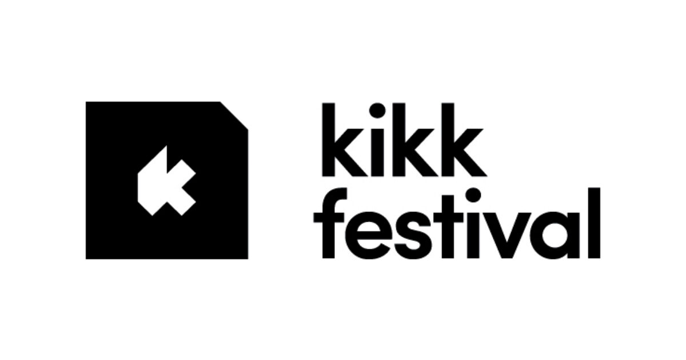
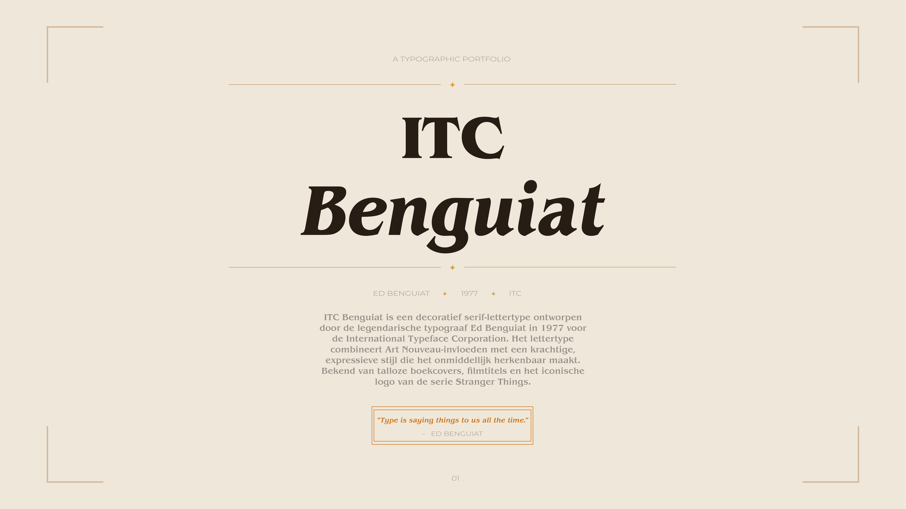

Werkplekleren 2
Werkplekleren 2 (POKR)
Een real-world case waarbij we de OKR-applicatie 'POKR' ontwierpen voor een echt bedrijf. De focus van dit project lag op het efficiënt samenwerken in een multidisciplinair team, specifiek met programmeurs van een andere afdeling, om de brug te slaan tussen design en development.

Social Media Campagne
KIKK Festival 2026
Een wervende social media campagne om creatieve professionals naar het festival in Namen te trekken. Volledig technisch afgestemd op Instagram en LinkedIn.

Typografie · Editorial
Fontfolio ITC Benguiat
Een 8-pagina tellend redactioneel portfolio dat het retro karakter en de anatomie van het iconische lettertype ITC Benguiat volledig in beeld brengt.

Branding · Illustrator
Cristaline Rebrand
Modernisering van een logo dat al sinds 1992 ongewijzigd was. Focus op eenvoud, schaalbaarheid en een sterker visueel verhaal.
Front-end · Code
Takeaway (DishDash)
Interactieve bestelwebsite gebouwd met HTML, CSS en JavaScript. Focus op UX en een soepele navigatie voor de gebruiker.

Graphic Design
Web & Digital Creaties (Posters & Visuals)
Collectie van posters en digitale visuals. Sterke focus op kleurgebruik, compositie, typografie en out-of-the-box denken.

Webdesign · Code
Bakkerij Website
Volledig zelf opgebouwde website voor een lokale bakkerij. Vanaf het design tot de code gebouwd met focus op een smakelijke gebruikerservaring.
Geen projecten gevonden voor dit filter.